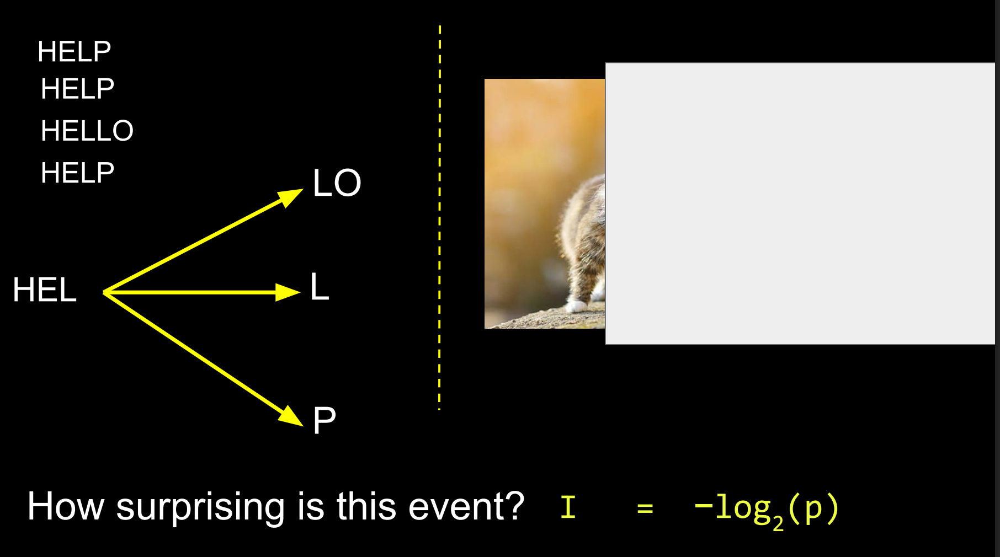
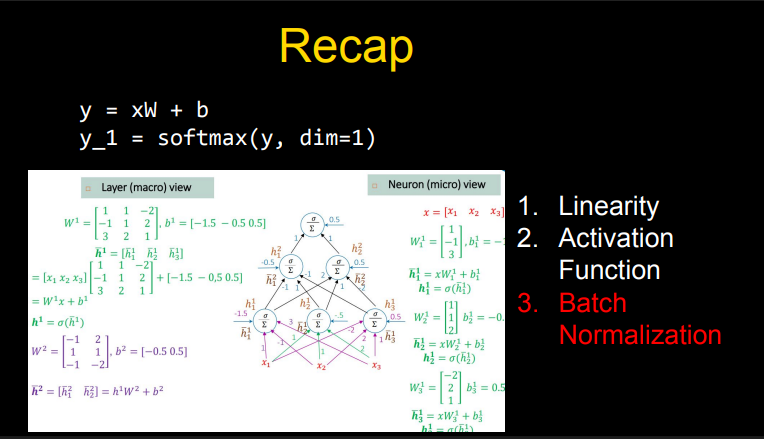
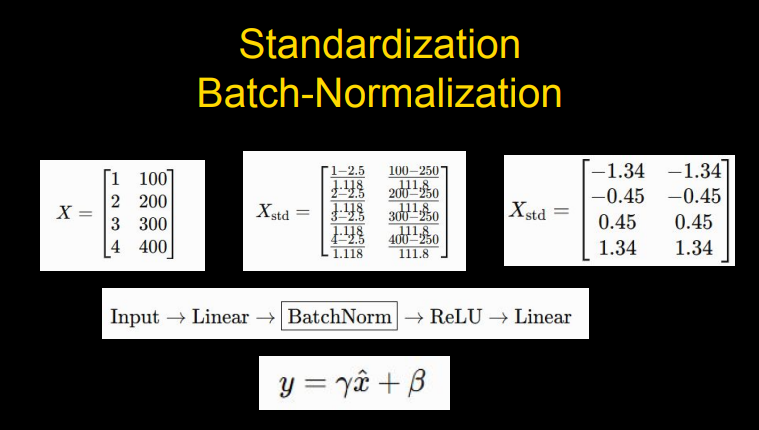
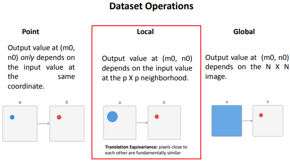

输入图像 (Input: 5×5)
*
卷积核 (Kernel: 3×3)
=
输出特征图 (Feature Map: 3×3)
当前计算公式 (Dot Product)：
点击“下一步”或“自动播放”开始计算...
Week 1 我没有听，大概主要是讲解 vector, matrix, feature, layer 这些东西。
Week 2 从 Week 1 这里开始介绍，首先给了一个 $X$，像是 fruit sorting，你要找出苹果的 feature 是什么，然后有个 weight（权重）。通过你的 $X$ 矩阵乘于 $W$，也就是 $X_1W_1$，这就是一个如下公式：
$$y = \begin{cases} 0 & (b + w_1x_1 + w_2x_2 \leqslant 0) \\ 1 & (b + w_1x_1 + w_2x_2 > 0) \end{cases}$$然后介绍了每个参数是什么，最主要的就是计算 vector，用 $L_2\text{ distance}$ 进行计算。首先解释下上面的公式：
整体公式的逻辑：
中间的表达式 $b + w_1x_1 + w_2x_2$ 被称为加权综合得分：
其次是 $L_2\text{ Distance}$：

这个是在 Reddit 上找的图，大家不太懂的也可以去 Reddit 上找些攻略，类似于知乎。主要逻辑就是 $PQ = \sqrt{|PA|^2 + |QA|^2}$，像是勾三股四弦五。然后衔接到矩阵去 Softmax 就是：
$$\text{向量 (Vectors)} \xrightarrow{\text{计算两两 } L_2 \text{ 距离}} \text{距离矩阵 (Distance Matrix)} \xrightarrow{\text{取负数/相似度转换}} \text{Logits} \xrightarrow{\text{Softmax}} \text{概率矩阵 (Probability Matrix)}$$这个逻辑是假设你有 $N$ 个 $D$ 维的样本向量，拼成一个矩阵 $X \in \mathbb{R}^{N \times D}$：
$$X = \begin{bmatrix} x_1 \\ x_2 \\ \vdots \\ x_N \end{bmatrix}$$我们想计算任意两个向量 $x_i$ 和 $x_j$ 之间的 $L_2$ 欧氏距离：
$$d_{ij} = \|x_i - x_j\|_2 = \sqrt{\sum_{k=1}^D (x_{ik} - x_{jk})^2}$$遍历所有的 $i$ 和 $j$，就会得到一个 $N \times N$ 的 $L_2$ 距离矩阵 $D$：
$$D = \begin{bmatrix} 0 & d_{12} & \dots & d_{1N} \\ d_{21} & 0 & \dots & d_{2N} \\ \vdots & \vdots & \ddots & \vdots \\ d_{N1} & d_{N2} & \dots & 0 \end{bmatrix}$$对于一个 $n$ 维向量 $\mathbf{x} = \begin{bmatrix} x_1 \\ x_2 \\ \vdots \\ x_n \end{bmatrix}$，其 $p$-范数定义为：
$$\|\mathbf{x}\|_p = \left( |x_1|^p + |x_2|^p + \dots + |x_n|^p \right)^{\frac{1}{p}} \quad (p > 0)$$其中有三种关键特性：
这里所需要注意的规则是任何“范数”都必须满足以下三条基本原则：
import torch
X = torch.tensor([
[1.0, 1.0, 7.0, 150.0],
[1.0, 1.0, 10.0, 190.0],
[0.0, 1.0, 9.0, 130.0]
])
W = torch.tensor([
[0.2, 0.1, 0.9, 0.3],
[0.5, 0.2, 0.4, 0.1],
[0.1, 0.6, 0.8, 0.2]
])
logits = X @ W.T
probabilities = torch.softmax(logits, dim=1)
print(probabilities)上面的的代码展示了如何使用 PyTorch 计算 softmax 概率。
在 PyTorch 中，dim（Dimension）代表做计算的“轴”方向。
对于二维矩阵（形状为 [行, 列]），dim 的方向规则如下：
logits 矩阵是一个 $3 \times 3$ 的矩阵（3 个样本 $\times$ 3 个类别）。所以写 logits = X @ W.T。
假设输入矩阵为：$$\begin{bmatrix} a & b & c \\ d & e & f \end{bmatrix}$$
以输入得分向量 $z = [2.0, 1.0, 3.0]$ 为例，温度系数 $T$ 和不同的 Softmax 变体主要通过改变对数得分（Logits）的相对差距，进而影响经由指数函数 $e^x$ 放大后的概率分布。
1. 什么是 Softmin？
公式：$p_i = \frac{e^{-x_i/T}}{\sum_j e^{-x_j/T}}$
作用：在指数项加入了负号。与 Softmax（寻找最大值）相反，Softmin 会让得分越小（或距离越近）的元素获得越高的概率。常用于处理距离矩阵（如 $L_2$ 距离）。
如何缩放 Logits：加上负号处理，相当于乘以 $-1/T$。原始 Logits $[2.0, 1.0, 3.0]$ 变为 $[-2.0, -1.0, -3.0]$。
输出概率分布：数值颠倒后，原先最小的 $1.0$ 变成了最大的 $-1.0$。经指数运算后，$e^{-1.0} \approx 0.368$ 成为最大项，获得最高概率（$66.52\%$），输出为 $[0.2447, 0.6652, 0.0900]$。
为什么是这个分布特征：针对“越小越好”的数据维度（如 $L_2$欧式距离）。在距离矩阵中，距离越小代表两个样本越相似，Softmin 能确保距离最近的样本获得最高的相似度概率。
2. 什么是 Hardmax？
作用：即“胜者通吃”（Winner-takes-all）。只把最大值的位置设为 1，其余位置全部设为 0（输出 One-hot 独热编码），它是一种不可导的离散选择。
3. 什么是温度系数（Temperature $T$）？
温度系数 $T$ 引入在指数项中（$e^{x_i/T}$），用来控制概率分布的尖锐与平缓程度：
4. 当温度趋近于零（$T \to 0$）时会发生什么？
结论：Softmax 会直接退化为 Hardmax。
逻辑：当 $T \to 0^+$ 时，最大得分与其他得分的差距在除以 $T$ 后会被无限放大（$\frac{x_i}{T} \to \infty$）。求指数后，最大项占据绝对统治地位，导致其概率趋近于 1，其余项趋近于 0。这就是大语言模型（LLM）将 Temperature 设为 0 时输出会变得完全确定、不再具备随机性的原理。
实际操作如何缩放 Logits：计算 $z/T$。当 $T = 0.0001$ 时，Logits 变为 $[20000, 10000, 30000]$。
输出概率分布：最大项与其他项的差值被放大到了数万倍。在计算 $e^{z_i/T}$ 时， $e^{30000}$ 远大于 $e^{20000}$，导致最大项在分母中的占比无限接近 $100\%$，输出退化为 $[0.0, 0.0, 1.0]$。
为什么是这个分布特征：极低温度放大了得分之间的差距。在大语言模型（LLM）中，将 Temperature 设为 0 会让模型变得极度自信且固定，每次生成完全相同的答案。
| 机制 / 温度 $T$ | 缩放后 Logits ($z/T$) | 输出概率分布 $[p_1, p_2, p_3]$ | 分布特征 |
|---|---|---|---|
| Hardmax | — | [0.0000, 0.0000, 1.0000] |
胜者通吃 (One-hot) |
| $T \to 0$ (极其自信) | $[\infty, \infty, \infty]$ | [0.0000, 0.0000, 1.0000] |
退化为 Hardmax |
| $T = 0.5$ (低温度) | $[4.0, 2.0, 6.0]$ | [0.1173, 0.0159, 0.8668] |
陡峭 / 高确定性 |
| $T = 1.0$ (标准 Softmax) | $[2.0, 1.0, 3.0]$ | [0.2447, 0.0900, 0.6652] |
基准分布 |
| $T = 2.0$ (高温度) | $[1.0, 0.5, 1.5]$ | [0.3072, 0.1863, 0.5065] |
趋于平缓 |
| $T = 5.0$ (极高温度) | $[0.4, 0.2, 0.6]$ | [0.3289, 0.2693, 0.4018] |
接近均匀分布 ($\frac{1}{3}$) |
| Softmin ($T=1.0$) | $[-2.0, -1.0, -3.0]$ | [0.2447, 0.6652, 0.0900] |
最小值 $x_2=1$ 获得最高概率 |
import torch
X = torch.tensor([
[1.0, 1.0, 7.0, 150.0],
[1.0, 1.0, 10.0, 190.0],
[0.0, 1.0, 9.0, 130.0]
])
W1 = torch.tensor([
[0.2, 0.1, 0.9, 0.3],
[0.5, 0.2, 0.4, 0.1],
[0.1, 0.8, 0.6, 0.2]
])
H = X @ W1.T
print("H:\n", H)
W2 = torch.tensor([
[0.2, 0.4, 0.3],
[0.5, 0.1, 0.2]
])
Y = H @ W2.T
print("Y:\n", Y)
W_eff = W2 @ W1
print("W_eff:\n", W_eff)
Y_eff = X @ W_eff.T
print("Y_eff:\n", Y_eff)
prob = torch.softmax(Y, dim=1)
print("Softmax(Y):\n", prob)
OUTPUT：
H:
tensor([[51.6000, 18.5000, 35.1000],
[66.3000, 23.7000, 44.9000],
[47.2000, 16.8000, 32.2000]])
Y:
tensor([[28.2500, 34.6700],
[36.2100, 44.5000],
[25.8200, 31.7200]])
W_eff:
tensor([[0.2700, 0.3400, 0.5200, 0.1600],
[0.1700, 0.2300, 0.6100, 0.2000]])
Y_eff:
tensor([[28.2500, 34.6700],
[36.2100, 44.5000],
[25.8200, 31.7200]])
Softmax(Y):
tensor([[1.6260e-03, 9.9837e-01],
[2.5095e-04, 9.9975e-01],
[2.7320e-03, 9.9727e-01]])
这张图讲解的是多层前馈神经网络（Feedforward Neural Network）的矩阵并行前向传播过程，并借此揭示了深度学习中最核心的一个原理：如果隐藏层之间没有加非线性激活函数，多层神经网络会退化（折叠）为单层线性模型。
计算步骤逐行拆解
1. 输入层到隐藏层（$X \to H$）
2. 隐藏层到输出层（$H \to Y$）
核心考点：矩阵折叠与等价合并（$W_{\text{effective}}$）,图中间这三行推导是本页的灵魂所在：
$$Y = X(W^{(1)})^\top (W^{(2)})^\top = X (W^{(2)}W^{(1)})^\top$$$$W_{\text{effective}} = W^{(2)}W^{(1)}$$$$Y = X W_{\text{effective}}^\top$$
最终结果：Softmax概率计算
对 $Y$ 按行做 softmax(Y, dim=1) 归一化：

这张图讲解的是神经网络中单个神经元（微观视角）与整层网络矩阵（宏观视角）在数学上的完全等价性，展示了神经网络如何从“单神经元计算”组装成“全连接层矩阵运算”。
两种视角的对比
核心映射与符号拆解
为什么深度学习要使用宏观视角？
在 PyTorch 或 TensorFlow 中编写代码时，我们绝不会用 for 循环去逐个计算每一个神经元（微观方式），而是直接写成矩阵乘法 h = torch.sigmoid(x @ W + b)（宏观方式）。这种矩阵化表示能让 GPU 进行大规模并行计算，大幅提升模型训练速度。
假设输入特征向量为 $\mathbf{x} = [1, 0, 1]$，并选择计算简便的 ReLU 激活函数（受刺激点亮为正数，负数则置 zero：$\sigma(z) = \max(0, z)$）。
第一层（Layer 1）：从输入 $\mathbf{x}$ 到 $h^1$
1. 微观视角（单个神经元逐个计算）
得出第一层激活后的输出向量：$h^1 = [2.5, 2.5, 0]$。
2. 宏观视角（全层矩阵并行计算）
直接使用矩阵乘法加偏置：$$\bar{h}^1 = \mathbf{x} W^1 + b^1 = [1, 0, 1] \begin{bmatrix} 1 & 1 & -2 \\ -1 & 1 & 2 \\ 3 & 2 & 1 \end{bmatrix} + [-1.5, -0.5, 0.5]$$$$\bar{h}^1 = [4, 3, -1] + [-1.5, -0.5, 0.5] = [2.5, 2.5, -0.5]$$
激活函数运算：$$h^1 = \text{ReLU}([2.5, 2.5, -0.5]) = [2.5, 2.5, 0]$$两种视角的计算结果完美一致。
第二层（Layer 2）：从 $h^1$ 到最终输出 $h^2$
将第一层算出的输出 $h^1 = [2.5, 2.5, 0]$ 作为第二层的输入：$$\bar{h}^2 = h^1 W^2 + b^2 = [2.5, 2.5, 0] \begin{bmatrix} -1 & 2 \\ 1 & 1 \\ -1 & -2 \end{bmatrix} + [-0.5, 0.5]$$
先做矩阵乘法得到各个通道的得分：$$h^1 W^2 = [2.5 \times (-1) + 2.5 \times 1 + 0 \times (-1),$$
$$\quad 2.5 \times 2 + 2.5 \times 1 + 0 \times (-2)] = [0, 7.5]$$
加上偏置向量 $b^2$：$$\bar{h}^2 = [0, 7.5] + [-0.5, 0.5] = [-0.5, 8.0]$$
经过 ReLU 激活函数后，得到神经网络最终输出：$$h^2 = \text{ReLU}([-0.5, 8.0]) = [0, 8.0]$$

在看这张图之前，我们得先知道什么是XOR；XOR（异或）是一个经典的非线性可分问题，它要求神经网络能够学习到非线性的决策边界。XOR（Exclusive OR，异或） 是逻辑学与计算机科学中的一种基本逻辑运算，核心规则是：“同为假，异为真”（即输入两个相同的值输出 0，输入两个不同的值输出 1）。
真值表（Truth Table）
在机器学习中，通常将 0/1 映射为负例与正例：
| 输入 $x_1$ | 输入 $x_2$ | 输出 $y = x_1 \oplus x_2$ | 类别归属 |
|---|---|---|---|
| 0 | 0 | 0 | Class 0 |
| 0 | 1 | 1 | Class 1 |
| 1 | 0 | 1 | Class 1 |
| 1 | 1 | 0 | Class 0 |
为何 XOR 在深度学习中极其重要？XOR 并不只是一道简单的逻辑题，它是深度学习发展史上的里程碑级难题。
1. 几何上的“线性不可分”（Linearly Inseparable）
如果在二维平面直角坐标系中把这四个点画出来：
在几何上，绝对找不到任何一条单一的直线（$w_1x_1 + w_2x_2 + b = 0$）能够把 Class 0 和 Class 1 完全分开。
2. 引发历史上第一个“AI 寒冬”
1969 年，人工智能先驱马文·明斯基（Marvin Minsky）证明了当时的单层感知机（Single-layer Perceptron）无法解决 XOR 问题。由于单层网络本质上只是一个线性分类器，这一发现直接揭示了当时 AI 模型的致命局限，导致人工智能研究陷入了长达十年的停滞（即第一次 AI 寒冬）。
3. 现代深度学习的破局之道
要解决 XOR 问题，神经网络必须具备两个要素：非线性激活函数和多层结构。
然后我们再来看这张图用具体数值演示了 XOR（异或）分类任务在缺乏非线性激活函数时是如何彻底失效崩溃的。
1. 输入特征与分类目标,数据集包含 4 个二维样本，按 XOR 规则分类：
矩阵 $X$ 巧妙地将二维坐标扩展为了四维特征矩阵 $[x_1, x_2, -x_1, -x_2]$。
2. 第一层运算（隐藏层 $Z_1 = X W_1$）
由于没有使用激活函数（即恒等映射 $H_1 = Z_1$），输入矩阵直接乘以权重 $W_1$：
这一步隐藏层生成了含有正负数值的线性组合。
3. 第二层运算与相抵（$\text{Logits} = H_1 W_2$）
权重 $W_2$ 的逻辑是将 $H_1$ 和 $H_2$ 累加赋给 Class 0，将 $H_3$ 和 $H_4$ 累加赋给 Class 1：
致命问题出现：由于缺乏非线性截断，正负得分在第二层相加时完全被相抵清零。所有 4 个样本算出的最终得分 Logits 全变成了 $[0.00, 0.00]$。
4. 结果退化（Softmax）
将 Logits $[0, 0]$ 输入 Softmax 计算概率：$$\text{Softmax}([0, 0]) = [0.500, 0.500]$$神经网络对所有样本的输出概率都是 $50\%$，模型退化为纯粹的“随机瞎猜”。
关键结论：激活函数（如 ReLU）如何救场？
假设在第一层后加入了 $\text{ReLU}(z) = \max(0, z)$ 激活函数：
非线性激活函数的“非对称截断”破坏了正负相抵的线性僵局，才使神经网络获得了扭曲特征空间、解决非线性分类的能力。

这张图通过有无激活函数（ReLU）的对照实验，直观展示了非线性激活函数在解决 XOR 异或问题时起到的决定性作用。
| 步骤 / 指标 | 无激活函数 (Without Activation) | 有 ReLU 激活函数 (With ReLU) |
|---|---|---|
| 隐藏层输出 $H_1$ | $H_1 = Z_1$，保留了负数（如 $-2.00$） | $H_1 = \text{ReLU}(Z_1)$，负数全部被强制截断为 $0.00$ |
| Logits 计算 | $H_1 W_2$ 计算时正负数直接抵消，结果全为 $[0.00, 0.00]$ | 负数归零后消除相抵，得到高对比度得分 $[2.00, 0.00]$ 或 $[0.00, 2.00]$ |
| Softmax 概率 | 两类概率均为 $[0.500, 0.500]$（概率完全均等） | 正确类别的概率提升至 $0.881$（判定高度自信） |
| 分类准确率 | 50.0%（模型只能随机盲猜） | 100.0%（4 个数据点全部精准预测） |
1. 为什么无激活函数会失败？
在第二行中，$Z_1$ 的输出同时存在 $2.00$ 与 $-2.00$。由于没有激活函数，$W_2$ 矩阵直接将它们相加，导致 $(-2.00) + 2.00 = 0.00$。这种正负相抵使得神经网络无法提取任何有用的特征空间变化，最终准确率卡在 $50\%$。
2. ReLU 做了什么？
第三行加入 $\text{ReLU}(z) = \max(0, z)$ 后，所有的负数（$-2.00$）被直接清零变为 $0.00$。这打破了线性的正负抵消机制，使得 $W_2$ 能够顺利计算出明确的预测得分（$2.00$），把 XOR 数据完美映射到了非线性可分的空间中。

这张 PPT 直观地阐明了激活函数（Activation Functions）的核心使命：通过引入非线性（Non-linearity），赋予神经网络拟合复杂曲面判定边界的能力。
三图对比解析
关键数学本质
如果隐藏层不施加激活函数 $\sigma(\cdot)$，多层神经网络的前向传播会直接折叠为单个矩阵运算：$$\mathbf{y} = W_2 (W_1 \mathbf{x} + \mathbf{b}_1) + \mathbf{b}_2 = (W_2 W_1)\mathbf{x} + (W_2 \mathbf{b}_1 + \mathbf{b}_2) = W_{net} \mathbf{x} + \mathbf{b}_{net}$$多层线性函数的复合仍然是线性函数。只有引入激活函数后，网络才打破了线性组合的约束，具备拟合任意复杂决策边界的能力（通用近似定理）。

| 激活函数 | 数学公式 $\sigma(z)$ | 输出范围 | 导数公式 $\sigma'(z)$ | 核心特性与局限 |
|---|---|---|---|---|
| Sigmoid | $\frac{1}{1 + e^{-z}}$ | $(0, 1)$ | $\sigma(z)(1 - \sigma(z))$ | 处处连续可导，但两侧极易引发梯度消失（导数最大值仅 0.25）；非零中心化导致收敛慢。 |
| Tanh | $\frac{e^z - e^{-z}}{e^z + e^{-z}}$ | $(-1, 1)$ | $1 - \sigma^2(z)$ | 零中心化（Zero-centered），收敛速度显著快于 Sigmoid；但两侧饱和区依然存在梯度消失。 |
| ReLU | $\max(0, z)$ | $[0, +\infty)$ | $$\begin{cases} 1 & \text{if } z \ge 0 \\ 0 & \text{otherwise} \end{cases}$$ | 计算极快（无指数运算），正半轴无上限可缓解梯度消失；缺点是 $z=0$ 不可导且负半轴有坏死风险。 |
1. 梯度饱和与梯度消失（Gradient Vanishing）
当 $|z|$ 较大（如大于 4）时，Sigmoid 与 Tanh 函数输出进入饱和区，其导数迅速衰减接近 0。根据链式法则，反向传播时这些小于 1 的导数连续相乘，会导致深层网络的梯度呈指数级衰减，前层参数无法获得有效更新。
2. 零中心化（Zero-centered）对收敛的影响
Sigmoid 输出恒为正数，导致下一层神经元的输入全部同号，反向传播计算出的权重梯度要么全正要么全负，更新轨迹呈现低效的“之字形”（Zig-zag）。Tanh 输出以 0 为中心，消除了这种偏置现象，因而收敛速度更快。
3. 为什么 ReLU 成为现代深度学习的首选？

这张 PPT 通过反例探讨了一个核心问题：“我们总是需要激活函数吗？在某些特定情况下，加不加 ReLU 效果可能完全一样。”
| 运算环节 | 无激活函数 (No Activation) | 有 ReLU 激活 (With ReLU) | 现象说明 |
|---|---|---|---|
| 中间结果 $Z_1 = X W_1$ | $[51.60, 18.50, 35.10]$ | $[51.60, 18.50, 35.10]$ | 输入 $X \ge 0$ 且权重 $W_1 \ge 0$，乘积全为正数 |
| 隐藏层输出 $H_1$ | $H_1 = Z_1$ | $H_1 = \text{ReLU}(Z_1) = Z_1$ | 当 $z > 0$ 时，$\text{ReLU}(z) = z$，失去截断作用 |
| 预测与概率 (Softmax) | Class 1 ($99.84\%$) | Class 1 ($99.84\%$) | 后续计算轨迹与概率分布完全重合 |
1. 激活函数的“生效条件”
激活函数要真正为网络引入非线性能力，输入数据必须能够触及激活函数的非线性区域（对 ReLU 而言，即存在 $z \le 0$ 的负数部分）。如果所有神经元输出全落在线性区间（$z > 0$），ReLU 就退化为纯线性映射 $f(x) = x$。
2. 与 XOR 异或案例的对比
在前面的 XOR 案例中，$Z_1$ 输出了负数（$-2.00$），ReLU 成功将负数截断为 $0.00$，消除了第二层计算时的正负抵消；而在本例中，由于没有任何负数被截断，ReLU 无法发挥任何扭曲特征空间的作用。
3. 核心结论
代码里写了激活函数 $\neq$ 模型获得了非线性能力。网络参数的初始化与输入数据分布决定了激活函数能否被真正“激活”。如果所有节点都工作在线性区，多层神经网络本质上依然只是一个单层线性分类器。

真实类别 P = [1, 0, 0]，对比预测概率 Q 在不同误判程度下的 Loss 计算：
| 度量方式 | 预测良好 Q1 [0.99, 0.01, 0] | 预测极差 Q2 [0.001, 0.999, 0] | 梯度与纠错效果 |
|---|---|---|---|
| MSE 距离损失 (||P-Q||²) | 0.0002 | 1.9960 | 惩罚存在上限 (≤2)，概率接近0时梯度消失，训练停滞。 |
| 交叉熵 / KL 散度 (-ln Qtrue) | 0.0100 | 6.9078 (飙升) | 对致命错误施加无穷大梯度惩罚，推动权重快速更新。 |
当 P > 0 时，强制要求 Q > 0。模型宁可产生模糊的预测，也要把真实数据的所有可能（多种 Mode）全部覆盖住。常用于分类任务与语言模型。
当 P = 0 时，强制要求 Q = 0。模型宁可牺牲多样性，也只锁定在自己最有把握的单一极高概率区域输出。常见于 GAN 或部分蒸馏策略。

图中展示了信息量与惊奇度的直观关系：概率越低的事件，其信息量（即惊奇度）越高。






在全连接网络中，输入特征与权重是一对一绑定的。

如果有 m 个输入点 [x1, x2, ..., xm]，计算输出 z 时：
卷积的核心武器是滑动窗口（Sliding Window）和权重共享（Weight Sharing）。
假设我们有一个只有 3 个权重的卷积核（Filter/Kernel）：W = [w1, w2, w3]。
当它在输入序列 [x1, x2, x3, x4, x5, ..., xm] 上一步步向右滑动时：
无论窗口滑动到哪一步，用来与输入点做乘法的永远是相同的这组参数 (w1, w2, w3)！
这是因为图像和语音等现实数据具有两个极其重要的物理特性：
| 特性 | 感知机 / 全连接 (FC) | 卷积 (Convolution) |
|---|---|---|
| 工作方式 | 全局关注：一次性连接所有输入点 | 局部扫描：滑动窗口只看邻近点 |
| 权重分配 | 每个输入点配独占的权重 | 所有位置共享同一套卷积核权重 |
| 参数量 | O(输入尺寸)（随尺寸爆炸） | O(卷积核大小)（尺寸极小且固定） |
| 本质假设 | 认为任何点和任何点都可能有关联 | 认为“距离近的相关性高”且“特征分布均匀” |
假设输入序列长度为 14，卷积核尺寸为 2，权重为 [0.5, 0.5]，步长 Stride = 1（每次向右滑动 1 个单位）：
当窗口滑动到序列最右侧末尾时，遇到了计算死角：
[0, 1]。1 上，但卷积核需要 2 个元素 才能完成计算，右侧缺少可匹配的数据。在数组末尾人工补充一个 0（将序列扩展为长度 15）：
填充后，卷积核得以顺利完成最后一步点乘计算。
参数代入： 输入长度 N=14，Padding P=1，卷积核尺寸 K=2，步长 S=1：
输出维度完美恢复为 14，保持了特征维度的前后一致。
展示 3×3 卷积核在 5×5 输入图像上逐像素滑动点乘求和，计算 3×3 特征图（Feature Map）的过程
卷积核长度为 2，内部权重固定为 [0.5, 0.5]。它在输入序列上每次向右平移 1 个单位，将覆盖区域内的元素分别相乘并求和：
0 × 0.5 + 1 × 0.5 = 0.51 × 0.5 + 2 × 0.5 = 1.52 × 0.5 + 1 × 0.5 = 1.5若不补充数据，当滑动到序列末尾时（访问最后一个元素 1），卷积核需要 2 个元素才能完成计算，此时右侧已没有数据支持覆盖，导致计算无法对齐。
解决方案：在末尾人工补充一个 0（即 Zero-Padding）。
[1, 0]1 × 0.5 + 0 × 0.5 = 0.5 (演示动画中步骤 14)代入数值：(14 + 1 - 2) / 1 + 1 = 14 （完美保持特征维度）
数学本质： $f(\text{shift}(X)) = \text{shift}(f(X))$。即：对输入数据做位置平移后再做卷积，等于先做卷积然后再对输出特征图做同等程度的平移。
手算过程验证：卷积核为 [-1, 0, 1]（用于检测梯度上升边缘）。
数学本质： $g(\text{shift}(X)) = g(X)$。即：无论目标在图像中如何移动，最终网络提取出的分类特征值保持不变。
实现方式：在卷积层后叠加 最大池化（Max Pooling）。
池化层抹去了特征出现的具体微小坐标，只保留“该区域内是否出现了特征”，从而让神经网络对物体的微小位置漂移不敏感。
下面展示 PPT 中的完整二维卷积案例：原始图像为 5×5，经过 $P=1$ 的零填充（Zero-padding）扩展为 7×7 矩阵，使用 3×3 全 1 卷积核，以步长 $S=2$ 进行滑动计算。
以本例数据代入：输入 $W_i = 5$, Padding $P = 1$, 卷积核 $K = 3$, 步长 $S = 2$：
因此生成了 4×4 的特征图（共有 16 个神经元）。各拆解项几何含义如下：